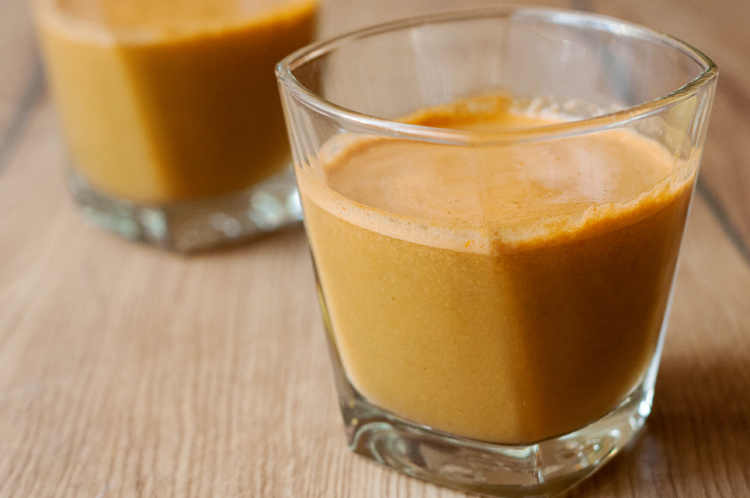

1. Healthy Green Juice
This green juice recipe is great for detoxing after the holidays or whenever you have overdone it! It's worth buying organic celery, even if you buy conventional for everything else. Adjust fruit and veggie amounts to suit your personal taste. More apples equals a sweeter drink.

Ingredients
- Celery
- Green apples
- Cucumber
- kale
- Fresh ginger
Directions
- Gather all ingredients.
- Process celery, apples, cucumber, kale, lemon, and ginger through a juicer.
- Serve immediately or store in a glass jar in the fridge for up to one day; shake before drinking.
2. Vitamin Detox Juice
Juicing is huge right now in fitness circles, but so frequently we see juices with more sugar than nutritional value. So, we give you our Vitamin Boost Detox Juice version of a detox juice. We've put together a great mix of fruits and veggies that is big on both flavor and health.
Ingredients
- carrot
- orange
- Appple
- Kale
- spinach
Directions
- Wash them in clean water to remove any debris.
- Add all the ingredients to a juicer and juice. For blending, add ingredients to a blender along with 2 cups chilled water and pulse until smooth
- Add salt and pepper to taste.
3. Simple Lemon Juice
Lemon Water (Nimbu Pani, Limbu Sarbat, Lime Water) prepared with lemon, salt and sugar is a perfect drink for hot summer as it provides instant energy and hydrates body in no time. It also provides vitamin C and helps flush out toxins from body.
Ingredients
- Lemon Juice
- Salt
- Sugar
- Ice Cubes
- Black Pepper Powder
Directions
- Lemon, sugar and salt are required for this recipe. You can use green lime instead of lemon in this recipe.
- Pour 2 cups water in a medium pot or a jug.
- Add a pinch of pepper powder and mix well.